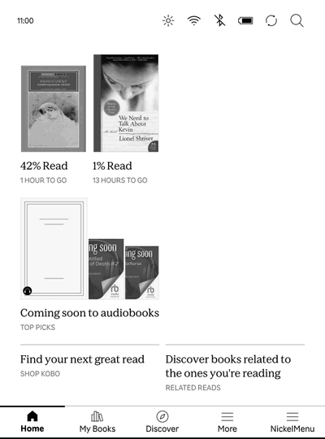
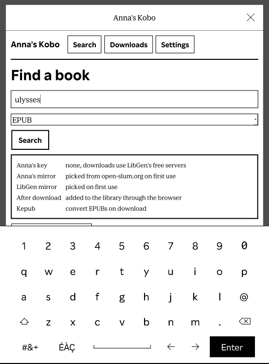
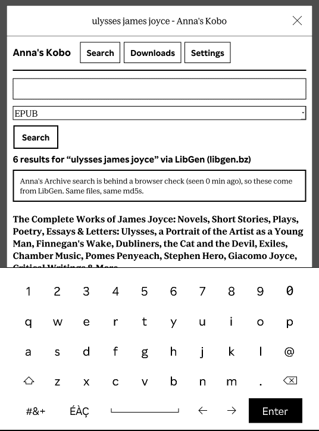
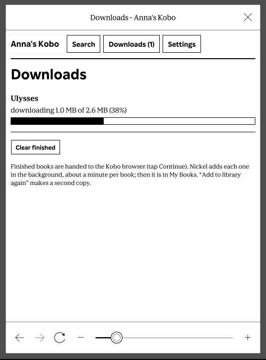
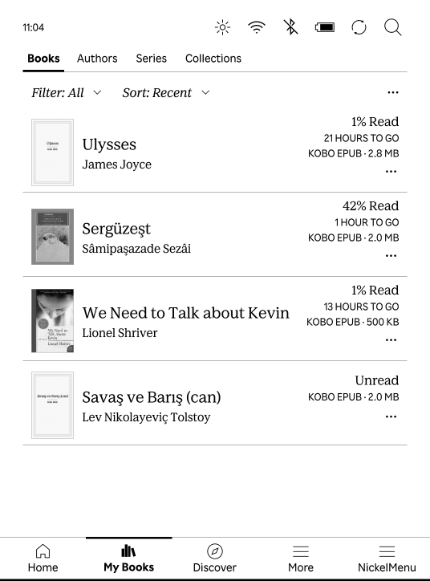

Search
Open Anna's Kobo from NickelMenu and type a title or author. Anna's Archive first. When its search pages are behind the browser check, the app asks LibGen instead and says so. Same files, same md5s.
Search from the e-reader, tap Download, and the book is in your library a few seconds later. No computer, no cable.

Plug the Kobo in, open the installer, restart the Kobo. NickelMenu comes along if it is missing.
Free and GPL-3.0. On Windows or Linux, install by hand.
| Runs on | The Kobo. A single 4 MB Rust binary. |
|---|---|
| Tested on | Kobo Clara BW, firmware 4.45. |
| Sources | Anna's Archive and LibGen. Books download from LibGen's free servers. Add a membership key in Settings to use Anna's fast servers. |
| Formats | Whatever the source has. EPUBs become KEPUBs on the device, via kepub-rs. |
| Needs | NickelMenu. The Mac installer adds it. |
| Price | Free. GPL-3.0-or-later. Source on GitHub. |

Open Anna's Kobo from NickelMenu and type a title or author. Anna's Archive first. When its search pages are behind the browser check, the app asks LibGen instead and says so. Same files, same md5s.

Results show the format and size. EPUB is the default filter. Tap Download.

The download runs on the Kobo. EPUBs are converted to KEPUB on the device, about two seconds a book, so you get Kobo's page turns, reading stats and highlights.
Mirrors fail now and then. The app walks several before it gives up, and there is a Retry button.

Tap Continue in the download dialog. The book is in My Books and on the home screen, like any other Kobo book.
The Kobo shows an update screen for a few seconds. Anna's Kobo is then in NickelMenu. Run the installer again later to update.
Same steps, same dialogs, no download:
curl -fsSL https://raw.githubusercontent.com/tunctn/annas-kobo/main/tools/install-usb | sh
Any computer. NickelMenu must already be on the Kobo.
KoboRoot.tgz from the latest release..kobo folder of the KOBOeReader drive.